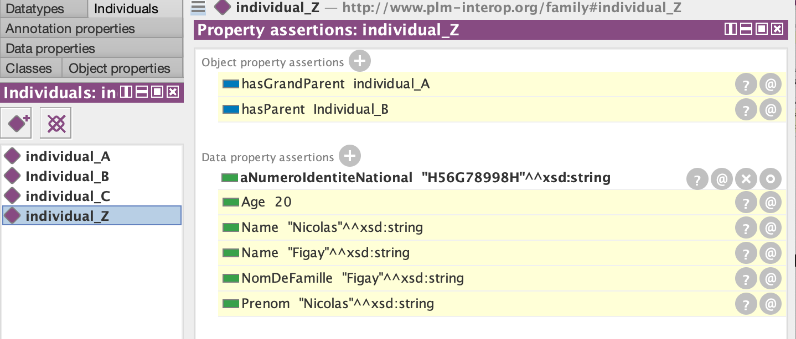
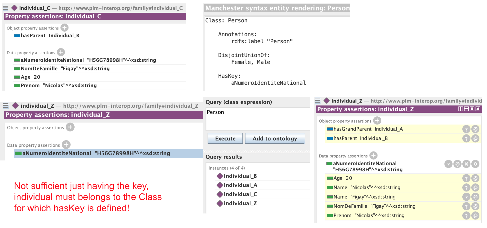
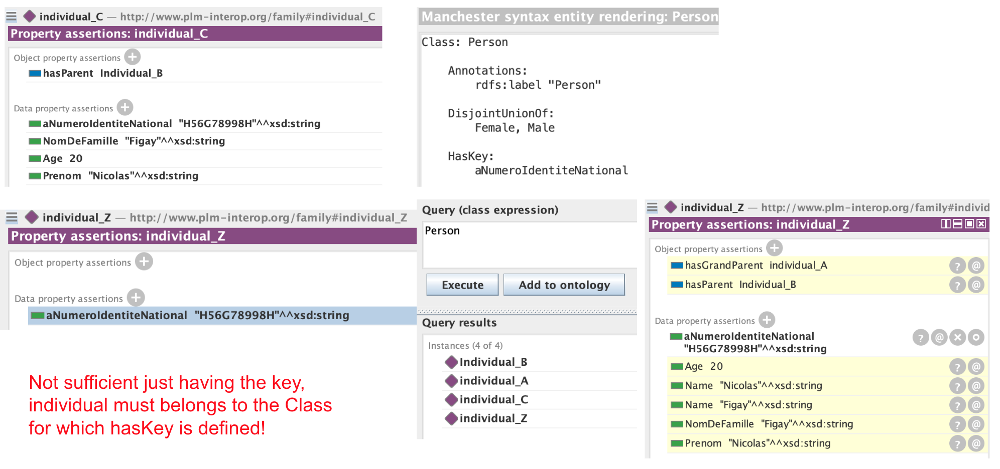

Semantic Interoperability Masterclass
From Foundational Principles to Interactive Knowledge Cartography
Presented by Dr Nicolas Figay and Pr Parisa Ghodous
üéØ Learning Outcomes
- Understand the core principles of semantic, including distinctions between data, information, and knowledge.
- Discover the value of semantic cartography, how it goes beyond ontologies, and what makes it truly “semantic.”
- Learn to structure enterprise architecture using ArchiMate to represent layers and capabilities within semantic models.
- Explore polyglot hypermodels that integrate multiple modeling languages and views into unified structures.
- Use ArchiCG to visually navigate, filter, and validate large, heterogeneous semantic graphs interactively.
- Understand how AI supports semantic reasoning, alignment, and automation in integration tasks.
- Apply all these concepts to real-world enterprise challenges like digital continuity and cross-system interoperability.
üß≠ Masterclass Journey
From
Meaning to
Interoperability
After introducting the research context, related to preparing and building continuous operational interoperability in enteprises for Product Lifecycle Management or PLM(A), we start our masterclass about Semantic Cartography.
First we present how meaning emerges—not from words, but from signs and shared references (B). Visuals help reveal the many ways one idea can be represented (C), and graphs become the medium to navigate this complexity (D).
Interoperability needs more than language—it needs models that bridge domains (E), rooted in logic but shaped for humans (F). Interactive graphs link formal ontologies to intuitive navigation (G), blending structured views into living maps (H).
AI augments this journey, offering suggestions while preserving human sense-making (I). It all converges in ArchiCG: a visual and semantic explorer where meaning becomes navigable (J)—not read, but seen.
You can follow this journey and access all the training resources directly at nfigay.github.io/training/SemanticCartography.html .
Masterclass Plan
- Research context
- Introduction to the nature of meaning
- Distinction between data, information and knowledge
- Communication challenges with natural languages
- Ontologies and polyglot hypermodels
- Logical foundations
- Modeling with OWL based semantic and graph interaction
- Composite hypermodels
- AI-augmented interoperability and future perpective
- Interactive semantic cartography via ArchiCG
- Conclusion
- Research Context
It is imporant to undertand the context and movition for Semantic Cartography.
- Bridging Silos in Information System Engineering
- Semantic & System Cartography: Bridging Silos Visually
Then we can start the masterclass about Semantic Cartography.
A.1 Bridging Silos in Information Systems Engineering
- Real-world systems span human, organizational, economic, societal & technological dimensions
- Diverse contexts: BPM, GIS, digital twins, PLM, emerging tech like ML, blockchain, process mining, sustainability
- Rapid evolution creates specialized sub-disciplines and research silos
- Risk: Fragmentation threatens coherent system design and interoperability
- Critical challenge: Building continuous operational interoperability in enterprises, especially for PLM
- Need: Holistic approaches that unify diverse aspects and support ongoing adaptation
A.2 Semantic & System Cartography: Bridging Silos Visually
- Maps, not silos: A layered, navigable cartography spanning data, processes, semantics, and organizational contexts
- Inspired by GIS/GPS: Provides a living, zoomable, context-aware representation for architects and engineers
- Bridging formal & practical: Combines ontologies, logic, and visual notations to support pragmatic interoperability
- Supporting continuous transformation: Preserve alignment and coherence across evolving systems and contexts
- Enabling a cohesive design: Break down silos by connecting specialized views in a shared semantic space
- Semantic cartography as a foundation for resilient, integrated information systems engineering
- Introduction to the nature of the meaning
To understand semantic, before to deal with technological aspect introduced by computers, it is necessary to define meaning, explore theories of meaning, and understand the importance of context for data interpretation.
- The main theoritical concepts
- From a single concept to conceptual graphs
- From human knowledge to machine processing
- The semantic triangle: beyond text
- Conclusion
In this chapter, we will discover that the nature of meaning was defined quite longer before computing and that it is not restricted to text
Next chapter will explain
what knowledge, information, and data are. >
B.1 The main theoritical concepts
The different concepts to be considered are:
- Semiotics
- Semantics
- Syntactics
- Pragmatics
- Denotation and Connotation
- Rethoric and meaning structuration
The associated definitions:
Semiotics is the study of signs and their meaning in communication.
A sign is an element that carries meaning.
The signifier is the form that the sign takes,
The signified
is the concept associated with the sign.No direct link between
the referent is the actual thing or concept in the real world
that a sign or word refers to.
Semantics studies the meaning and significance of words, sentences, symbols, or signs within a given context.
It deals with the meanings of words, sentences, and symbols.
It examines how these meanings are understood by users in different contexts.
It is divided into several subfields, including linguistic semantics, logical semantics, and visual semantics, which focuses on the interpretation of visual symbols.
Syntactics is the study of the rules for constructing sentences and the organization of linguistic elements into a coherent structure.
It determines how words and expressions can be combined to form correct statements.
It does not concern itself with the meaning of words, but with their grammatical arrangement.
In computer science, syntactics describes the structure of a programming language or data format (for example, JSON, XML).
Pragmatics is the study of how context influences the interpretation of meaning in communication.
It examines how language is used in real situations by speakers, writers, or other communicators, taking into account factors such as intent, relationships between participants, and the situational context.
Unlike semantics, which focuses on the inherent meaning of words and sentences, pragmatics focuses on how meaning is constructed and interpreted within interaction.
Denotation is the primary, explicit, and objective meaning of a word or symbol.
Connotation is a secondary, subjective, and cultural meaning associated with it.
For example, the word "rose" can denote a type of flower (denotation) but can also evoke feelings of romance (connotation).
Rhetoric is the art of structuring information to influence how a sign is interpreted.
It is based on three pillars of persuasion:
Ethos, which refers to the credibility and authority of the speaker
Logos, which involves the logic and rationality of the arguments presented and
Pathos, which appeals to the emotions of the audience.
B.2 From a single concept to conceptual graphs
Studying a concept standalone is nonsense. You have to consider:
- Graphs of concepts
- Individual Versus Groups of Indiduals
- Terms/Concepts in Context
- Multi Represented Referents
A concept alone carries limited meaning.
It is through its connections to other concepts that meaning emerges.
Conceptual graphs model these interdependencies, providing context and reducing ambiguity.
They are essential for building shared understanding in complex domains.
Individual knowledge is shaped by personal experience and perception.
Collective knowledge emerges from shared conventions, norms, and meanings within a community.
It ensures common understanding and reduces ambiguity in interpretation.
A single term can have different meanings across specialized vocabularies.
Each community (of knowledge, practice, or interest) may associate
it with distinct concepts.
This semantic divergence can lead to confusion and miscommunication.
A single referent may have different conceptual representations across domains. Each reflects specific stakeholder needs and contexts.
Note 1: The Ontology Web Language (OWL) and the Semantic Web support this plurality through mapped ontologies.
Note 2: Hypermodels ensure consistency, while viewpoints contextualize usage.
Note 3: Together, they enable semantic interoperability, the ability to communicationte despite heterogeneity of languages and viewpoints.
B.3 From Human Knowledge to Machine Processing
Let's now consider we are computer aided.
We have then a Dual Representation to enable both human understanding and software processing, symbolic Form meaningful for humans and code Representation processable by machines
- Referent → Digital Resource
Real-world concepts are mapped to digital identifiers. - Symbolic Form → ASCII Code
Human-readable terms or symbols (multi modal)
become machine-readable codes. - Concept Graph → Formal
DigitalRepresentation
Knowledge structures are turned into computable
formats.

Machines handle symbols, not meanings!
Humans understand meaning, not code!
Bridging both worlds requires semantic encoding of knowledge.
B.4 The semantic triangle: beyond text
The triangle applies to symbols in many domains:
-
Ideograms in Asian languages:
Ê∞¥(water in Chinese/Japanese) → üíß → actual water -
Road safety signs:
üî∫ with üë∑ → "Work Zone" → real construction site -
Lean Management icons:
üßØ (fire extinguisher) → fire safety station -
Technical drawing symbols:
⌀ → diameter → real cylindrical object
“Visual symbols are not just pictograms — they point to concepts and real-world references.”
Visual Syntax >> Combining Symbols into Meaning:
- Symbols can be combined into structured diagrams
- Spatial and connective rules form a visual
syntax
Examples: UML, BPMN, ArchiMate, subway maps - Structure carries meaning, just like sentence grammar
“Visual languages are not decoration — they are structured systems of meaning.”
Multi modal representations
Draw me a car. A car?
B.5 Conclusion
We explored the nature of meaning
- by exploring the theoritical concept associated to semiotics, semantics, syntactics, pragmatics and rhetorics
- pointing out it's not about single concepts, but conceptual graphs associated to community of interest or practice
- explaining impact of switching from individual to collective knowledge
- raising the importance to distinguish human undertanding and machine processing
- extending the need to consider visual notation and multi modal representations
All those considerations are key in order to undertand semantic cartography and how it contributes to preparing and building operational interoperability.
- Knowledge, Information, and Data
Semantic interoperability in knowledge and information management systems requires an understanding of what knowledge, information, and data are — and how they are interconnected.
- What is knowledge?
- What is information?
- What is data?
- Data from a knowledge management perspective
- Data from an information systems perspective
Sharing meaning is challenging — both natural language and raw data present interpretation issues.
C.1 What Is Knowledge?
- The mental ability that allows the mind to assimilate objective content—that is, a reality independent of the observer—once it has been translated into signs and ideas.
- It is also the result of this assimilation.
- Knowledge represents a symbolic possession of things and spans an infinite range of levels.
C.2 What Is Information?
- A part of knowledge
- Having information about a topic doesn’t mean you “know” the topic
- The more information you gather about a subject, the more you “know” it
- Complete knowledge means having as many perspectives as possible on a subject
- Not just quantity — valuable knowledge requires quality and sound epistemology: the study of how knowledge is acquired, validated, and made meaningful

C.3 What is data?
- In the philosophical conception of knowledge
Data are raw elements, facts, or observations without interpretation, which constitute the raw material for the acquisition of knowledge. - Historically, in the business context
Data was more closely associated with concepts such as files, databases, or records, without necessarily focusing on its meaning or interpretation.
There are noticeable communication difficulties on this topic between knowledge managers, ontologists, and computer scientists.
C.4 Data from the Perspective of Information Systems
- Today, in all organizations, ideas circulate constantly.
- Only those that are formalized and have a physical existence can be handled, exploited, and reused.
- Data represents the very physical existence of information.
- Data becomes information when it conveys meaning, particularly when interpreted in a given context.

C.5 Data in the Context of Knowledge
- Data: These are raw, uninterpreted facts—such as numbers or observations—that lack context.
- Information: This results from the organization and processing of data, giving it meaning through contextualization.
- Knowledge: This forms when information is understood and integrated, allowing for conclusions to be drawn and skills to be applied.
- Wisdom: This is the enlightened use of knowledge to make sound decisions, often based on experience and discernment.

- Communication Problems
Why is sharing meaning so hard in collaborative systems?
This section explores:
- Limits of natural languages and data repositories
- Typical ambiguities in technical contexts
- How semantic cartography helps
C.1 Limits of Natural Languages and data repositories
Natural language is powerful, but ambiguous
Lexical ambiguities such as Homonymy, Synonymy or Polysemy, Syntactic, Pragmatic or Referential Contextual ambiguities
Data and documents lack explicit semantics
Misalignments across roles, tools, and organizations
No shared, structured reference for meaning


Semantic Cartography = Structured Meaning
- Graphs represent concepts, relationships, and constraints
- Ontologies provide formal and shared meaning
- Interactive views reduce ambiguity and improve understanding
Combining visual modeling and ontological grounding overcomes language and data limitations.
From Ambiguity to Interoperability
Semantic Cartography enables:
- Disambiguation: precise terms linked to shared concepts
- Knowledge integration: across systems and organizations
- Operational alignment: consistent decisions and traceability
This is a prerequisite for true semantic interoperability.
C.2 Other sources of confusion
1. Cultural and linguistic complexities
- Regional variations: Lexical differences depending on the region (e.g. "pain au chocolat" vs "chocolatine").
- Cultural polysemy: Concepts loaded with meanings specific to a culture (e.g. "freedom").
- Linguistic evolution: Words changing meaning over time (e.g. "passion": suffering vs enthusiasm).
2. Expression issues
- Metaphors and idioms: Non-literal expressions (e.g. "to have one's feet on the ground").
- Jargon: Technical or specialized language incomprehensible to outsiders (e.g. "API").
- Unspoken elements: Implicatures or taboos making the message implicit (e.g. "He is not very efficient").
C.3 The common case of homonymy
Due to homonymy, do not confuse the term and the concept, which is linked to the referent in the real world, unlike the term (which has no direct link).
In natural language, there are many other interpretation problems...

C.4 Issues purely related to data
-
Format heterogeneity
- Multiplicity of standards (CSV, XML, JSON, etc.).
- Difficulty unifying data sources.
-
Lack of context
- Data isolated from their origin or purpose.
- e.g.: A date without specifying whether it is a start or end date.
-
Variable data quality
- Incomplete, incorrect, or outdated data.
- e.g.: Customer databases not synchronized between two systems.

C.5 Issues related to information
-
Semantic inconsistencies
- Terminology differences between organizations.
- e.g.: Does "product" refer to a good or a service?
-
Fragmentation
- Information scattered across systems or departments.
- e.g.: A CRM system and an ERP database not sharing the same customer data.
-
Lack of a common structure
- No shared model to organize information.
- e.g.: Two companies define the same KPIs differently.
C.6 Issues related to knowledge
-
Capturing tacit knowledge
- Critical know-how often remains informal or undocumented.
- e.g.: An expert has key information inaccessible to colleagues.
-
Loss of know-how
- Employee departures or lack of knowledge transfer.
- e.g.: A proprietary method lost after an expert leaves.
-
Cultural incompatibilities
- Differences in how organizations interpret and use knowledge.
- e.g.: "Short-term" vs. "long-term" views in sharing strategies.
C.7 Conclusion
When it comes to sharing meaning, many issues are linked to natural language and data.
- The mentioned problems hinder the sharing of meaning between application systems and knowledge management systems.
- This leads to technological, application, or organizational silos between communities.
- These issues must be resolved for both humans and machines.
This is what ontologies aim to address.
- Ontologies
We need to understand what ontologies are, what they are made of, and what they are used for.
- Definitions
- Ontologies
- What makes a good ontology
- Various uses
- Which logic?
- Which languages?
For explicit formalization, we rely on logic and set theory.
D.1 Definition
Ontology is a branch of philosophy that studies the nature of being, existence, and reality.
In computer science, an ontology is a formal and structured representation of knowledge in a specific domain, including a set of concepts and the relationships between them.
D.2 Ontologies
An ontology is a formal modeling of a knowledge domain that captures the conceptsA concept represents a category of objects, ideas, or entities belonging to a domain of knowledge. It is a class that groups instances sharing common characteristics. üß© Example: In an ontology about companies, Employee, Department, and Project are concepts., their relationsA relation describes a link or interaction between two concepts. It formalizes how entities are connected. üß© Example: worksIn links the concept Employee to the concept Department. üìå Types of relations: Hierarchical: isA (Employee is a Person) Associative: worksWith, manages, propertiesA property describes a characteristic or attribute associated with a concept. It links a concept to a value (number, text, date, etc.). üß© Example: For Employee, properties can be name, age, salary. For Project, properties can be name, start date, budget., and rulesA rule defines constraints or logical inferences in the ontology. It formalizes conditions that must be met or automatic deductions. üß© Example: If an employee works in a department and that department belongs to a company, then that employee works for that company. An employee cannot have two different social security numbers.. It enables the explicit and standardized description of knowledge shared by a community.
Goals
- Structure data and ensure its consistency.
- Address problems related to natural language and data.
- Enable automatic reasoning.
- Build semantic interoperability.
Structure
- Domain: Central shared concepts.
- Applications: Specific details for a use case.
- Organization: Terminologies specific to an entity.
D.3 What makes a good ontology
We expect an ontology to be
- Meaningful: all considered concepts have a referentA referent is what a concept refers to in the real world or in a domain of knowledge. It is the object, class, event, or entity (concrete or abstract) designated by a term. An ontology is meaningful when each described concept has a clearly identifiable and relevant referent.
- Correct: it captures the knowledge of subject matter experts.
- Minimally redundant: no unintentional synonyms.
- Sufficiently detailed descriptions with a rich axiomatisationAxiomatisation refers to the set of rules, constraints, and formally defined relations between concepts in an ontology. These axioms specify meanings, properties, and interrelations. A rich axiomatisation often expressed in formal logic allows precise interpretation and consistent use.
We aim to enable automated reasoningReasoning is the process of deduction, inference, or automatic verification of new knowledge from the concepts and axioms defined in the ontology. Using formal logic (such as predicate logic and set theory), a system can derive new information, detect inconsistencies, or check for completeness.
- Based on mathematical formalisms.
- Combines logic(s) and set theory.
D.4 Various uses
- Conceptualization phase for software engineering processes.
- Natural language processing.
- Artificial intelligence: knowledge base with reasoning, explainable AI.
- Semantic aggregation of heterogeneous data.
D.5 Which logic?
There are many logics used to formalize rules.
- Description logic
- First-order logic
- Higher-order logic
- Non-classical logic (probabilistic, fuzzy)
The level of formalization varies greatly.
Greater formalization makes languages better suited for automation.
Not all logics support reasoning.
D.6 Which languages?
There are many ontology description languages.
But not all offer the same expressiveness or utility, especially regarding support for automated reasoning.
Among the most widely used languages are:
- Natural language(s)
- UML, RDF, SKOS, Prolog, OWL (Lite, Full, DL) ...
We prefer a language that enables reasoning based on description logic.
- → OWL DL
- Logic and Set Theory
It is therefore necessary to understand the principles and basic concepts of logic and set theory.
- Logic and Set Theory
- Logic: Fundamental Principles
- Set Theory: Basic Concepts
- Set Theory: Relations
- Set Theory: Characteristics of Relations
- Set Theory: Types of Relations
- Practical Examples
- Set Theory: Logical Operators: AND and OR
- Set Theory: Extensive Definition of Sets
- Open World and Closed World
- Higher-Order Logic
- Fuzzy Logic
We can now apply what we have learned and experiment with ontology modeling in OWL using the Protégé software.
E.1 Logic and Set Theory
To formalize knowledge, two pillars are fundamental:
- Logic: a tool for formal reasoning.
- Set theory: structuring of concepts.
These two disciplines provide a foundation for modeling and automating reasoning.
E.2 Fundamental Principles
Logic is a powerful tool to formulate propositions and assess their truth:
- Proposition: A statement that can be either true or false, independently of it being stated.
- Connectors: AND (∧), OR (∨), NOT (¬), implication (→).
It allows validation of reasoning based on rigorous rules.
E.3 Quantifiers
Quantifiers allow generalization or restriction of propositions:
- Universal (∀): "For all". Example:
∀x (Human(x) → Mortal(x)) - Existential (∃): "There exists". Example:
∃x (Dog(x) ∧ Black(x))
These tools make it possible to formalize general or specific rules.
E.4 Basic Concepts
Set theory models collections of elements, relations, and operations, which are fundamental for understanding ontological concepts:
-
Set: A collection of elements (or objects*)
(
A = {1, 2, 3}). -
Membership:
x ∈ Ameans thatxbelongs to the setA. -
Operations: Union (
A ∪ B), intersection (A ∩ B), difference (A - B). -
Disjoint Sets: Two sets
AandBare disjoint if their intersection is empty (A ∩ B = ∅). -
Disjoint Union: A union of several disjoint sets.
Each element belongs to only one of the sets forming the union
(
A ∪ B, whereA ∩ B = ∅).
* An object is an individual entity, whereas an element is defined by
its membership in a set.
** Real-world objects, just like set elements, are not instances,
because they exist independently of models or classes from which
instances might be created. In other words, they are concrete entities
or units of a whole, not realizations derived from an instantiation
process based on an abstraction.
E.5 Relations
A relation is a link between elements of two (or more) sets:
- Definition: A relation
Ris a subset of the Cartesian product of two sets:R ⊆ A × B. - Example: If
A = {1, 2}andB = {a, b}, a relationRcould be:R = {(1, a), (2, b)}.
E.6 Characteristics of Relations
Relations can have various properties:
- Reflexive: Every element is related to itself:
∀x ∈ A, (x, x) ∈ R. - Symmetric: If
(x, y) ∈ R, then(y, x) ∈ R. - Transitive: If
(x, y) ∈ Rand(y, z) ∈ R, then(x, z) ∈ R. - Antisymmetric: If
(x, y) ∈ Rand(y, x) ∈ R, thenx = y.
E.7 Types of Relations
Relations can be classified based on their properties:
- Equivalence Relation: Reflexive, symmetric, and
transitive. Example: equality (
=). - Order Relation: Reflexive, antisymmetric, and
transitive. Example: ordering (
≤). - Function (Functional Relation): Relation where each element of the domain is related to exactly one element of the codomain.
E.8 Practical Examples
Various representations of relations include:
- Directed Graphs: Sets of nodes and arcs where arcs have a direction. Example: Social network (User A "follows" User B).
- Databases: Tables with columns linked by primary and foreign keys. Example: Employee table with Employee_ID (primary key), Department_ID (foreign key).
- Ontologies: Formal models representing concepts and their typed links or references. Example: Medical ontology with "Disease" linked to "Symptom" by "cause".
Representations for:
- Directed Graph: Nodes connected by directional edges.
- Database: Table with primary/foreign keys.
- Ontology: Concepts connected by typed links (e.g., "cause").
E.9 Intensive Definition of Sets
Sets can be defined by
stating a property that all their elements must satisfy, e.g.,
A = {x | P(x)}.
This typically uses existential (∃) and universal (∀) quantifiers, along with logical expressions (conjunction ∧, disjunction ∨, negation ¬, etc.). Here are three examples:
- Example 1 – Conditional Union: Set of elements in X
or Y related to at least one element:
{x | (x ∈ X ∨ x ∈ Y) ∧ ∃y R(x, y)}. - Example 2 – Universal Condition: Set of elements
related to all elements of
Y:
{x | ∀y (y ∈ Y → R(x, y))}. - Example 3 – Multiple Relations: Set of elements
related to two distinct
elements:
{x | ∃y ∃z (R(x, y) ∧ S(x, z))}.
In contrast, an extensive definition is based on explicitly enumerating elements.
E.10 Open World and Closed World
The notions of open world and closed world are fundamental concepts in logic and knowledge management in computer science, especially in ontology-based systems and databases.
Open World Assumption (OWA): anything not explicitly known to be true is considered unknown (not false).
Closed World Assumption (CWA): anything not explicitly known to be true is considered false.
| Aspect | Open World (OWA) | Closed World (CWA) |
|---|---|---|
| Knowledge | Incomplete and extensible | Complete and exhaustive |
| Interpretation | Absence = Unknown | Absence = False |
| Use | Ontologies, Semantic Web | Databases |
| Example | Nicolas might have a house (unknown) | Nicolas does not have a house (false) |
- Semantic Modeling with OWL
- What is OWL?
- The Protégé software
- The Manchester Syntax
- The OWL Viewer
- OWL Language Constructs
- Individuals, Properties, and Classes
- OWL Properties
- Equivalence and Subsumption with OWL
- Constraints Induced by Relations
- Individuals: Typing, Identity, and Property
- Use of Quantifiers
- Self, Value, and Key
- Protégé: Data Redundancy and RDF
- Validation: Consistency and Validity
F.1 What is OWL?
A language for ontology modeling
- created to explicitly specify a conceptualization
- standardized by W3C for the Semantic Web and Linked Data
- based on Description Logic and Set Theory
- used to model complex knowledge
- suitable for federating ontologies from multiple domains
- supported by many tools, especially Protégé
- supported by reasoners under the open world assumption
F.2 The Protégé Software
- Ontology Creation
- OWL2 Support
- Reasoning
- Graphical Interface
- Export and Sharing

Protégé is an open-source software widely used for the creation, editing, and management of ontologies, especially those based on the OWL2 (Web Ontology Language).
It is heavily used in research, semantic application development, and fields such as artificial intelligence, knowledge management, and the semantic web.
F.3 Manchester Syntax
Manchester Syntax in Protégé: a simple and readable way to describe an ontology, making Description Logic (DL) more accessible without requiring deep knowledge of formal notation.

- Accessibility: Textual and intuitive description of concepts and relationships
- Concepts and Relationships: Simple definition of classes,
relationships, and their composition using and, or,
not, etc. For example, to define a class of people older than 18
and students:
Person and (hasAge value > 18) and Student. - Representation of Restrictions: Expression of property
restrictions. For example:
Person and (hasChild some HPI)defines a person with a child of type HPI.
Manchester syntax simplifies the formalization of ontologies in Description Logic while offering enough power to model complex relationships in the knowledge domain.
F.4 OWL Viewer
The viewer is a visualization utility for OWL ontologies that takes up and complements the symbols offered by Protégé for OWL.
- Groups by type of OWL construct
- Classes, properties: object or data, individuals... :
- Property characteristics: ↔ symmetric, x↔ antisymmetric, ↻ inverse, ◯ reflexive, x◯ anti-reflexive, △ transitive, → functional, ← inverse functional
- Relations between individuals, classes, and properties: domain (D), range (R), ⊂ subsumption, ≡ equivalence, ⊥ disjoint...
- Ontology structure and imports: As nested elements.
This is a prototype allowing interactive visualizations that can be embedded in web pages.
Selection Expand nodes edges Collapse nodes edges.
F.5 OWL Language Constructs
Table of OWL language constructs
| Logic | Set Theory | Manchester | Description | Example |
|---|---|---|---|---|
| AND (∧) | Intersection (∩) |
A and B
|
Elements common to both sets or concepts. | A ∩ B (e.g.: "Person and Student") |
| OR (∨) | Union (∪) |
A or B
|
Elements belonging to at least one of the sets or concepts. | A ∪ B (e.g.: "Person or Animal") |
| Existential quantifier (∃) | Existence of an element | hasChild some Person | There exists at least one element in the specified relation. | ∃ hasChild.Person (e.g.: "an individual for whom there exists a child who is a person.") |
| Universal quantifier (∀) | All elements | hasParent only Person | All elements satisfy the specified relation. | ∀ hasParent.Person (e.g.: "every individual having a parent who is a person.") |
| NOT (¬) | Complement |
not A
|
All elements that are not in the specified set or concept. | ¬A (e.g.: "Not Student" to represent everything that is not a student.) |
F.6 Individuals, Properties, and Classes
The 3 basic concepts in OWL are:
- Individuals: Represent concrete or specific instances, i.e., real or imagined entities.
- Properties: Describe relationships between individuals or
their characteristics. They help structure interactions:
- Object properties: Link individuals to other individuals.
- Data properties: Link individuals to literal values.
- Classes: Categorize individuals into abstract concepts,
enabling the organization of knowledge.
Datatypes and annotations can also be added.
This organization, from individual to abstract concept, is essential for building ontologies capable of modeling complex domains.

F.7 OWL Properties
Properties as independent concepts: In OWL, properties are first-class entities, defined independently of classes. Unlike attributes, they are not restricted to the context of a specific entity or class.
- Object Properties: Link individuals to other individuals.
- Data Properties: Link an individual to a literal value.
- Domain: Defines the classes whose individuals can be the subject of the property.
- Range: Defines the classes or types whose individuals or values can be the object of the property.
- Inverse properties: A property can be the inverse of another (e.g., ParentOf and ChildOf).
- Property chains: A property can be defined as a property chain (hasUncle = hasParent o hasBrother).
Like classes, object properties are sets that can be disjoint, equivalent, or included (subsumption).


F.8 Equivalence and Subsumption with OWL
In OWL, the notions of equivalence and subsumption allow describing and reasoning about the relationships between concepts (classes and properties). These notions are based on set theory and facilitate ontological modeling.
- Equivalence (equality): Two classes or properties are said to be equivalent if they describe exactly the same set of elements or the same relationships.
- Subsumption (inclusion): A class or property A subsumes another class or property B if every element of B is also an element of A. This relation corresponds to set inclusion.
These relations are essential for reasoning about models and deriving facts from definitions.
F.9 Principle of Constraints Induced by Relations
To leverage description logic and inference engines
- Classification: Classes and subclasses
- Object Properties: properties, subproperties, inverse, domain, range, asymmetry
- Individuals: explicit declaration of links
- Inference engine activation
- DL Queries
=> answers derived from explicit declarations and rule application to INFER

F.10 Individuals: Typing, Identity, and Properties
Individuals represent specific entities within a domain and link abstract concepts to concrete elements.
isa: Defines that an individual is an instance of a class, or that the class types the individualsameAs: Indicates that two individuals represent the same entity in the real world (they are identical)- Property assignment: explicit declaration or inference of typed links between individuals or with data, typing done using ontology properties.
=> Individuals form the foundation of ontologies, enabling expression of concrete relations within a formal model.

F.11 Usage of Quantifiers
They allow expressing restrictions on properties between individuals and are essential to precisely model relationships and constraints in an ontology.
-
Existential quantifier (
some): Specifies that there exists at least one link matching a property:Person and hasChild some Son -
Universal quantifier (
only): Specifies that all links of a property concern a given class:Male and hasChild only Daughter -
Exact quantifier (
exactly): Specifies an exact number of links for a property:Person and hasChild exactly 2 -
Minimum (
min) and maximum (max) quantifiers: Allow defining numeric constraints on the number of links:Person and hasChild max 3
These restrictions apply to object properties and allow automatic reasoning on models.
F.12 Self, Value and Key
In OWL, Self, Value, and Key are mechanisms to model specific relations or unique identifications between individuals and their properties.
-
Self: Allows specifying that an individual is related to
itself via a given property.
Person knows Self
Means that a person knows themselves. -
Value: Restricts a property to a specific value for an
individual.
Person hasAge value 30
Means that the age of a person is exactly 30. -
Key: Defines one or more unique identifiers (keys) to
distinguish individuals.
Key: (hasID)
Means that the propertyhasIDis used to uniquely identify individuals in an ontology.
These mechanisms are useful to define specific constraints, ensure uniqueness, or model particular relations in an ontology.

 

F.13 Protégé: Data Redundancy and RDF
In OWL, data and information management rely on logical mechanisms. Protégé, as an ontology editor, offers notable automatic behaviors that facilitate working with ontologies but can surprise beginners.
- Reduction of redundant assertions
- Importing RDF files with OWL class creation
These behaviors show how Protégé combines flexibility and rigor to transform raw data into structured information while helping to build a coherent ontology.

F.14 Validation: Consistency and Usefulness
When creating an ontology, it is essential to validate the captured logic to ensure its internal consistency and practical usefulness in the targeted domain.
Consistency validation
- Check that no logical contradiction exists in the ontology.
- Use inference engines to detect inconsistencies in class, property, and relation definitions.
Usefulness validation
- Ensure the ontology supports the identified use cases.
- Test the ontology with concrete scenarios or realistic examples from the application domain.
Validation ensures that the ontology is not only logical but also capable of fulfilling its role in its application context.
- Composite Hypermodel
How to build semantic interoperability using OWL V ontologies
- Semantic interoperability
- Building semantic interoperability using ontologies
- Alignment during conceptualization
- Post-hoc integration
- Contribution to the DIKW Pyramid
- Synonymy, Polysemy, and Syntactic Ambiguity
- Mechanisms resolving these issues
- Creating value for businesses
- Challenges in communication between stakeholders
We can now conclude >
- AI-augmented interoperability and future
perpective
How to build semantic interoperability using OWL V ontologies
- Semantic interoperability
- Building semantic interoperability using ontologies
- Alignment during conceptualization
- Post-hoc integration
- Contribution to the DIKW Pyramid
- Synonymy, Polysemy, and Syntactic Ambiguity
- Mechanisms resolving these issues
- Creating value for businesses
- Challenges in communication between stakeholders
We can now conclude >
- Interactive semantic cartography via ArchiCG
How to build semantic interoperability using OWL V ontologies
- Semantic interoperability
- Building semantic interoperability using ontologies
- Alignment during conceptualization
- Post-hoc integration
- Contribution to the DIKW Pyramid
- Synonymy, Polysemy, and Syntactic Ambiguity
- Mechanisms resolving these issues
- Creating value for businesses
- Challenges in communication between stakeholders
We can now conclude >
- Conclusion
- Key Points
- Perspectives
H.1 Summary of Key Points
To build semantic interoperability, we have
- Defined what semantics is and its links with ontology, logic, and set theory
- Explored OWL as one of the ontology formalization languages that supports the needs for precisely defining semantics with the help of computers
H.2 Perspectives
We have limited ourselves to semantic aspects without detailing the IT aspects and implementation. Furthermore, this is only an introduction and it may be necessary
- to deepen the production of ontology representations in OWL for more complex models
- to explore more technical aspects related to W3C specifications and technologies associated with Linked Data and the Semantic Web
- to work on production chains and environments for ontology consumption
- to work on ontology engineering and standards such as SMART
- to consider other formalization languages based on higher-order logics or other types of logic
- to work on higher-level architectures...
Annexes
- Symbols and concepts used to describe ontologies
- Slide template
Symbols and concepts used to describe ontologies
Table of definitions and symbols
| Logic | Characteristics | Example | Formalization (Manchester) |
|---|---|---|---|
| \(\mathcal{A}\mathcal{L}\) | Attributive language: allows atomic negation, concept intersection, universal restrictions, limited existential quantification | Concepts "Animal" and "Plant" can be negatively combined. | Animal and not Plant |
| \(\mathcal{F}\mathcal{L}\) | Frame-based language: allows concept intersection, universal restrictions, limited existential quantification, role restrictions | A "Person" must be an "Employee" and have a "Manager" role. | Person and Employee and hasRole some Manager |
| \(\mathcal{E}\mathcal{L}\) | Existential language: allows concept intersection, existential restrictions | An "Animal" must exist in a specific class. | Animal and existsIn some Species |
| \(\mathcal{A}\mathcal{L}\mathcal{C}\) | An attributive description logic language used to define concepts and relations in an ontology. It models ontologies by combining concepts, relations, and restrictions. | Animal ⊓ (∃a: attr): An "Animal" concept with an existential restriction on the "attr" relation. |
Class: Animal SubClassOf: hasAttr some L or hasAttr some C |
| \(\mathcal{S}\mathcal{h}\mathcal{O}\mathcal{I}\mathcal{Q}\) | ShOIQ is an extension of ALC that adds inverse roles, nominal roles, and cardinality restrictions. It allows specifying more complex concepts, including the use of specific individuals in axioms. | ShOIQ: Class {hasPart some A} |
Class: ClassName SubClassOf: hasPart some A hasPart exactly 2 B hasPart some individual1 hasPart inverse some C |
| \(\mathcal{S}\mathcal{h}\) | The letters "Sh" in ShOIQ refer to the possibility of using nominal roles, i.e., roles that link specific individuals instead of abstract concepts. | hasPart some {A} | maritalStatus some {"Single", "Married"} |
| \(\mathcal{O}\) | The letter "O" in ShOIQ indicates that inverse roles can be used. This allows defining relationships in the opposite (inverse) direction of a role. | hasPart inverse some {A} | inverse (isSonOf) some {a} |
| \(\mathcal{I}\) | The letter "I" in ShOIQ refers to the use of cardinality restrictions, i.e., the number of occurrences of a role or relation an individual can have. | ≥2 hasPart some A | isMotherOf some Daughter |
| \(\mathcal{Q}\) | The letter "Q" in ShOIQ allows specifying restrictions on individuals linked by a role (nominal roles), providing greater expressivity for relations between individuals. | ≥1 hasPart some {a} | isMotherOf min 1 {a, b, c, d, e} |
| \(\mathcal{N}\) | Numeric component: allows defining restrictions on numeric or temporal values, including intervals, equalities, and value comparisons. | ≥ 1 R.value ≥ 10 && value ≤ 20 |
Class: Person SubClassOf: hasAge min 1 hasAge >= 10 hasAge <= 20 |
| ≥n R | The restriction ≥n specifies that for a given role R, an individual must have at least n relations of type R with other individuals. | ≥2 hasPart some {A} | |
| R− | The inverse role (R−) allows defining a relationship in the opposite direction of a given role. For example, an inverse of "hasPart" could be "isPartOf". | isPartOf some {A} | ObjectProperty: isParentOf InverseOf: isChildOf |
| {a} | Nominal roles specify a specific individual in a relation. For example, "hasPart some {John}" refers to the relation where an object has a part specifically linked to an individual named "John". | hasPart some {John} | isSonOf some {a} |
| R o S | Role composition (R o S) allows defining a complex relation combining two roles into one relation. Also called a chain. | hasPart o isPartOf | isMotherOf some (isDaughterOf some) |
| A ≡ B | The axiom "A ≡ B" defines two classes A and B as equivalent. This means everything belonging to A also belongs to B and vice versa. | A ≡ B |
Class: BornAfter2000 EquivalentTo: hasBirthYear some xsd:dateTime[>= "2000-01-01T00:00:00"^^xsd:dateTime] |
| C ⊆ D | The symbol "⊆" indicates that a concept C is a subset of another concept D, meaning everything that belongs to C also belongs to D. | C ⊆ D | Class: Daughter SubClassOf: Child |
| ABox | The ABox (Assertion Box) contains assertions about individuals, i.e., facts regarding instances of an ontology. This includes information such as an individual's membership in a concept or relations between individuals. | Person(Pierre): Pierre is an instance of the class "Person". | Individual: d Types: Daughter |
| TBox | The TBox (Terminology Box) contains axioms about concepts, i.e., definitions that describe the ontology's structure, such as relations between concepts or equivalences. | Person ⊑ Human: Every instance of "Person" is also an instance of "Human". | Class: Daughter SubClassOf: Child |
| RBox | The RBox (Role Box) contains axioms about roles or relations between individuals, such as role hierarchies or properties like transitivity or reflexivity. | fatherOf ≡ inverse(motherOf): The relation "fatherOf" is the inverse of "motherOf". | ObjectProperty: isParentOf InverseOf: isChildOf |
| Role | A role is a relation between two individuals in the ontology. Roles can be used to express connections between concepts, such as properties or relations like "is a parent of" or "has an address". | fatherOf(Pierre, Jacques): "Pierre" is the father of "Jacques". | ObjectProperty: isFatherOf |
| Class defined by an extensive set of individuals | A class can be defined as the set of individuals satisfying certain conditions or properties. This can include explicit definitions such as {a1, a2, ..., an}, where each element belongs to a specific group of individuals. | Person ⊓ {Pierre, Jacques}: The class "Person" can be defined by the set of individuals {Pierre, Jacques}. | {a,b,c,d,e,f} |
| Set of values | A set of values represents a collection of elements that can be assigned to a property or role. For example, a set of values could be the possible colors an object may have. | Color ⊑ {Red, Blue, Green}: The class "Color" is defined by the possible values {Red, Blue, Green}. | {"Single", "Divorced", "Married", "Widowed"} |
| ⊥ | The bottom concept (empty set, represents a contradiction). | ⊥: An empty concept, no individual belongs to it. | owl:Nothing |
| ⊤ | The universal concept (universal set). | ⊤: The universal concept, all instances belong to it. | owl:Thing |
| A | An atomic concept (a base class of individuals). | A: An atomic concept such as "Person". | Class: Person |
| ¬C | The negation of concept C (complement). | ¬Person: A concept representing everything that is not a "Person". | not Person |
| C ∩ D | The intersection of concepts C and D (both concepts). | Child ⊓ Male: The intersection of "Child" and "Male". | Male and Child |
| C ∪ D | The union of concepts C and D (either concept). | Daughter ⊔ Son: The union of "Daughter" and "Son". | Daughter or Son |
| ∃R.C | Existential restriction (there exists a relation R with concept C). | ∃a: Child: There exists a relation "a" (e.g., "is child of") with concept "Child". | isChildOf some |
| ∀R.C | Universal restriction (every relation R must satisfy concept C). | ∀a: Child: Every relation "a" (e.g., "has child") must lead to a "Child". | ObjectProperty: isParentOf Range: Child |
| ≤1 R | Functionality (at most one R). | ≤1 a: Child: "There exists at most one child" for each instance. | isChildOf max 1 |
| ≥n R, ≤n R | Unqualified cardinality restrictions (at least/at most n relations R). | ≥2 a: Child: "There exist at least two 'a' relations of type 'Child'." | isChildOf min 2 |
| ≥n R.C, ≤n R.C | Qualified cardinality restrictions (at least/at most n relations R to concept C). | ≥2 a: Child ⊓ Male: "There exist at least two children and each child is a Male." | isChildOf min 2 and Male |
| {a} or {a1, ..., an} | Nominals (a specific individual or a set of individuals). | {Pierre}: A nominal concept where "Pierre" is a specific individual. | {a} |
| R— | Inverse of the role. | fatherOf—: The inverse of the relation "fatherOf", i.e. "childOf". | ObjectProperty: isParentOf InverseOf: isChildOf |
| R ∩ S | Intersection of roles. | fatherOf ⊓ motherOf: An individual who is both "fatherOf" and "childOf". | Father and Son |
| R ∪ S | Union of roles. | fatherOf ⊔ motherOf: An individual who is either "fatherOf" or "motherOf". | Father or Mother |
| ¬R | Complement of the role. | ¬fatherOf: The complement of the relation "fatherOf", i.e. "not fatherOf". | not Father |
| R o S | Role chain (composition). | fatherOf o parentOf: The composed relation between "fatherOf" and "parentOf". | ObjectProperty: hasGrandchildren SubPropertyChain: isParentOf o isParentOf |
| R* | Reflexive-transitive closure. | fatherOf*: The relation "fatherOf" with its reflexive-transitive closure (includes ancestors). | ObjectProperty: isSiblingOf Characteristics: Transitive |
| id(C) | Concept identity. | id(Person): The identity relation for the concept "Person". | - |
| Empty TBox | No concept definitions are present. | - | - |
| A ≡ C | Acyclic TBox: A is equivalent to C; no cycles allowed. | Person ≡ Human: "Person" is equivalent to "Human". | - |
| C ⊆ D | General TBox: concept C is a subset of concept D. | Person ⊆ Human: "Person" is a subset of "Human". | - |
| Tr(R) | Role transitivity. | Tr(fatherOf): The relation "fatherOf" is transitive. | - |
| R ⊆ S | Role hierarchy: role R is a subset of role S. | fatherOf ⊆ parentOf: The relation "fatherOf" is a subset of "parentOf". | ObjectProperty: hasGrandchildren SubPropertyOf: isFamilyOf |
| R o S ⊆ R | Complex role inclusions. | fatherOf o parentOf ⊆ fatherOf: A role chain "fatherOf" and "parentOf" is a subset of "fatherOf". | - |
| s | Additional role characteristics. | - | - |
[Short title describing the slide topic]
[Subtitle explaining the main idea]
[Concise introduction explaining the topic addressed]
- [Key point #1] :
- [Detailed explanation of key point #1]
- [Key point #2] :
- [Detailed explanation of key point #2]
- [Key point #3] :
- [Detailed explanation of key point #3]
[Conclusion or transition to the next slide]
![[Description of the image]](img/ontology.png)
OWL Ontology derived from ArchiMate as a Semantic Cartography new
Collapse nodes edges.
Selection Expand nodes edges
Collapse nodes edges.
Other Content Slide
Other content without any graph.
Graph 2 Slide
Here is some textual content for Graph 2.
Let's Test Your Understanding!
Answer this quick quiz before we continue.
Section Quiz
Live Results
- Communication problems
To build semantic interoperability of knowledge and information management systems, many issues related to natural language and data must be resolved.
- Confusions related to natural language
- Other sources of confusion
- The common case of homonymy
- Data-related issues
- Information-related issues
- Knowledge-related issues
- Conclusion
This requires relying on formal and explicit representations of knowledge domains—ontologies.
C.1 Confusions related to natural language
1. Lexical ambiguities
- Homonymy: Words with several unrelated meanings (e.g. "bank").
- Synonymy: Different words with similar meanings (e.g. "house" and "home").
- Polysemy: Words with several related meanings (e.g. "book": object or unit of weight).
C.2 Contextual ambiguities
- Syntactic: Multiple interpretations due to grammatical structure (e.g. "The man saw the woman with binoculars").
- Pragmatic: Meaning depends on implicit intentions (e.g. "Can you close the door?").
- Referential: Problems related to pronouns or anaphora (e.g. "Marie told Julie that she had to leave").
C.2 Other sources of confusion
1. Cultural and linguistic complexities
- Regional variations: Lexical differences depending on the region (e.g. "pain au chocolat" vs "chocolatine").
- Cultural polysemy: Concepts loaded with meanings specific to a culture (e.g. "freedom").
- Linguistic evolution: Words changing meaning over time (e.g. "passion": suffering vs enthusiasm).
2. Expression issues
- Metaphors and idioms: Non-literal expressions (e.g. "to have one's feet on the ground").
- Jargon: Technical or specialized language incomprehensible to outsiders (e.g. "API").
- Unspoken elements: Implicatures or taboos making the message implicit (e.g. "He is not very efficient").
C.3 The common case of homonymy
Due to homonymy, do not confuse the term and the concept, which is linked to the referent in the real world, unlike the term (which has no direct link).
In natural language, there are many other interpretation problems...
C.4 Issues purely related to data
-
Format heterogeneity
- Multiplicity of standards (CSV, XML, JSON, etc.).
- Difficulty unifying data sources.
-
Lack of context
- Data isolated from their origin or purpose.
- e.g.: A date without specifying whether it is a start or end date.
-
Variable data quality
- Incomplete, incorrect, or outdated data.
- e.g.: Customer databases not synchronized between two systems.
C.5 Issues related to information
-
Semantic inconsistencies
- Terminology differences between organizations.
- e.g.: Does "product" refer to a good or a service?
-
Fragmentation
- Information scattered across systems or departments.
- e.g.: A CRM system and an ERP database not sharing the same customer data.
-
Lack of a common structure
- No shared model to organize information.
- e.g.: Two companies define the same KPIs differently.
C.6 Issues related to knowledge
-
Capturing tacit knowledge
- Critical know-how often remains informal or undocumented.
- e.g.: An expert has key information inaccessible to colleagues.
-
Loss of know-how
- Employee departures or lack of knowledge transfer.
- e.g.: A proprietary method lost after an expert leaves.
-
Cultural incompatibilities
- Differences in how organizations interpret and use knowledge.
- e.g.: "Short-term" vs. "long-term" views in sharing strategies.
C.7 Conclusion
When it comes to sharing meaning, many issues are linked to natural language and data.
- The mentioned problems hinder the sharing of meaning between application systems and knowledge management systems.
- This leads to technological, application, or organizational silos between communities.
- These issues must be resolved for both humans and machines.
This is what ontologies aim to address.
- Building Semantic Interoperability
How to build semantic interoperability using OWL V ontologies
- Semantic interoperability
- Building semantic interoperability using ontologies
- Alignment during conceptualization
- Post-hoc integration
- Contribution to the DIKW Pyramid
- Synonymy, Polysemy, and Syntactic Ambiguity
- Mechanisms resolving these issues
- Creating value for businesses
- Challenges in communication between stakeholders
We can now conclude >
G.1 Semantic Interoperability
Semantic interoperability ensures that different systems, applications, or organizations can exchange and interpret data coherently, while preserving the meaning of the information.
- Shared understanding of concepts: Use of ontologies or common vocabularies to clearly define terms and their relationships.
- Data integration: Alignment of models and structures through mappings of classes, properties, and concepts.
- Automation of exchanges: Use of tools capable of inferring and validating information based on defined rules.
G.2 Building Semantic Interoperability Using Ontologies
Mechanisms that allow linking systems, applications, and data with
different vocabularies or models.
Ontologies enable two complementary approaches:
- Alignment with pre-existing ontologies
- Post-hoc data integration
No mutual exclusion
G.3 Alignment During Conceptualization
Alignment during conceptualization involves integrating, from the design phase of an application, shared ontologies or vocabularies produced by communities of knowledge and practice.
- Use of recognized ontologies: Integration of existing standards to define concepts and properties (e.g., Dublin Core, FOAF, ontologies published or endorsed by ASD SSG).
- Model standardization: Adoption of common schemas and terminologies to ensure compatibility with other systems.
- Benefit: Reduction of semantic conflicts thanks to a shared conceptualization from the start.
Example: During the development of an e-commerce application, using an ontology like GoodRelations helps structure concepts such as products, prices, or transactions.

G.4 Integration After the Fact
In this approach, interoperability is built after the fact to integrate data coming from existing application systems, which are often incompatible with each other.
- Ontology mapping: Creating correspondences between classes and properties of different application systems.
- Use of pivot ontologies: Converting data into an intermediate format based on a central ontology to facilitate integration.
- Benefit: Adaptation to existing systems without requiring their complete redesign.
Example: To interconnect logistics application systems, a mapping is established between the concept "Product" in one system and "BOMItem" in another, using a pivot ontology defined ISO STEP 10303.

G.5 Contribution to the DIKW Pyramid
- Data: Facts or events formalized by **interpretable metadata** that provide a semantic framework.
- Information: Organization of data according to relationships and concepts via ontologies like OWL, giving meaning and context.
- Knowledge: Inferring new relationships or concepts from explicit information, relying on the OWL knowledge model.
- Wisdom: Enlightened application of knowledge to solve complex problems and make sound decisions.
G.6 Synonymy, Polysemy, and Syntactic Ambiguity
OWL helps resolve issues of synonymy, polysemy, and syntactic ambiguity by using unique identifiers (IRIs), labels, and annotations.
- Synonymy: Associating different terms with the same concept via labels.
- Polysemy: Creating distinct classes for each meaning of a term.
- Syntactic Ambiguity: Clarifying relationships between concepts through formal properties.
OWL ensures a precise representation of knowledge for consistent interpretation.


G.7 Resolving Ambiguity and Data Issues
In OWL (Web Ontology Language), each concept is identified by a unique IRI, enabling unambiguous identification.
- Identification by IRI
- Naming by labels
- Association of non-textual symbols
- Description for users
- Formal definition (in OWL)
Thus, an OWL ontology is a rich semantic representation that facilitates interoperability and knowledge exploitation.
G.8 Creating Value for Businesses
OWL ontologies (Web Ontology Language) bring significant economic value
to businesses by enabling semantic interoperability.
They allow to:
- Reduce integration and data exchange management costs
- Lower risks through better understanding of data and their relationships
- Streamline processes by creating a common language and simplifying automation
- Optimize resource management and the value chain
- Facilitate innovation and adoption of new technologies
G.9 Communication Challenge Between Stakeholders
Communication between domain experts, OWL specialists, and IT professionals is essential to ensure the collaboration needed to produce and use OWL ontology representations.
- Domain Experts: Provide essential business knowledge.
- OWL Specialists: Formalize this knowledge within a structured technical framework.
- IT Professionals: Design and implement IT systems.
- Challenge: Ensuring effective communication and collaboration among these stakeholders.